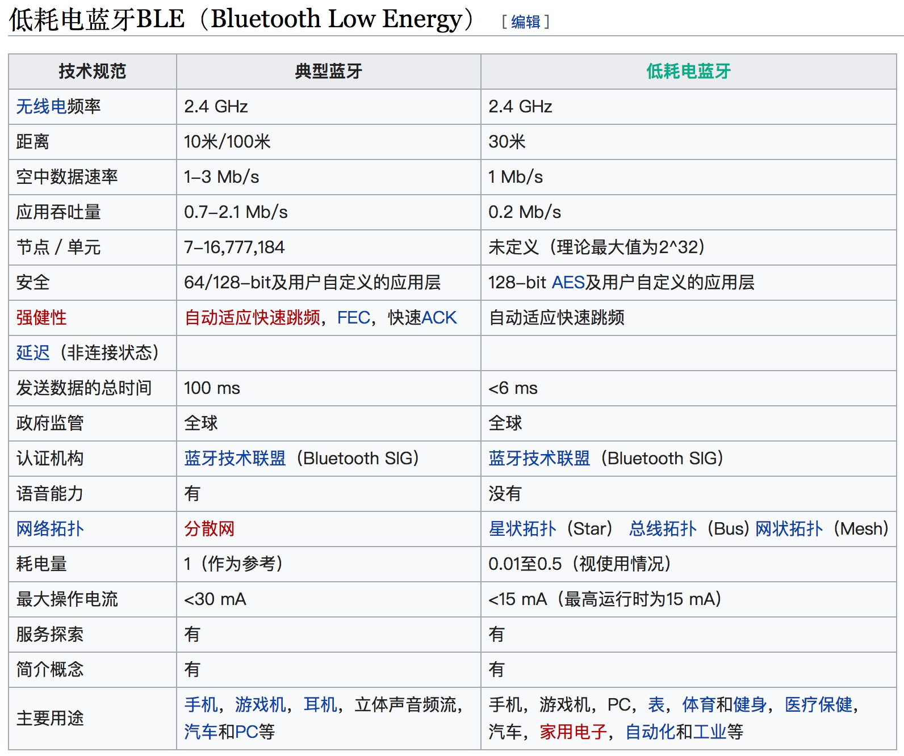
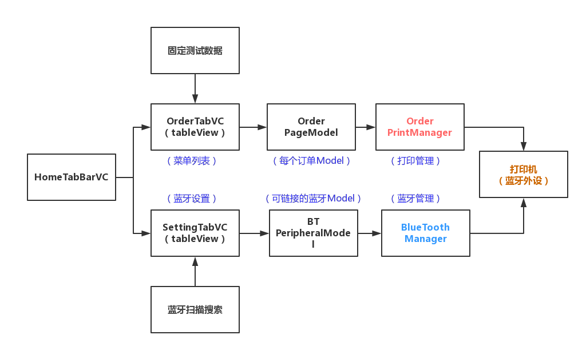
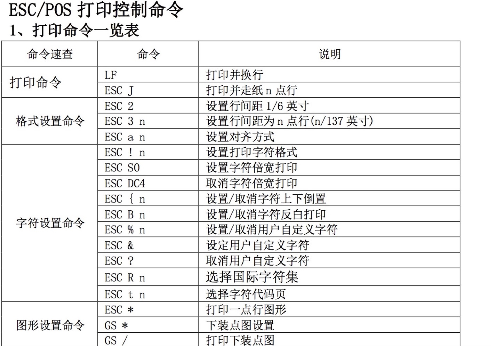
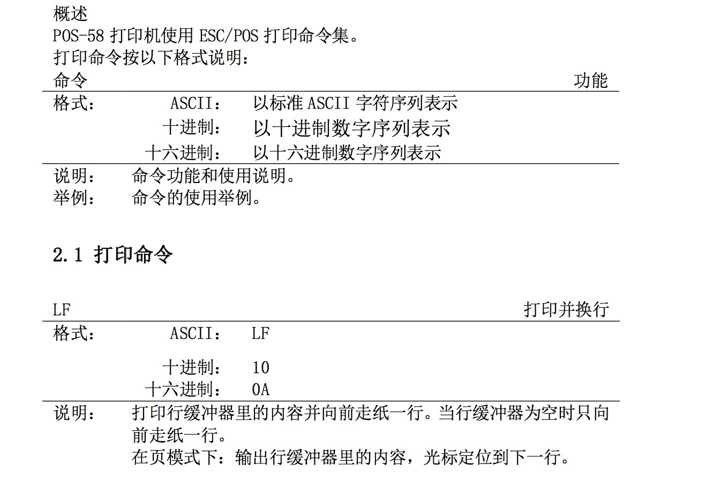

Your browser doesn't support the features required by impress.js, so you are presented with a simplified version of this presentation.
For the best experience please use the latest Chrome, Safari or Firefox browser.
组内分享--iOS蓝牙
徐子超 2017.10
1、蓝牙发展
蓝牙1.2: 匿名方式屏蔽设备的硬件地址,自适应频率跳跃,实际传输速度，实际测试约为24KB/S
蓝牙2.1: 加入了“非跳跃窄频通道”,支持多个速度水平,增加了Sniff省电功能
蓝牙3.0: 集成802.11PAL最高速度可达24,是2.0速度的8倍,引入了增强电源控制，实际空闲功耗明显降低
蓝牙4.0: 最重要的特性是支持省电,提出了“低功耗蓝牙”、“传统蓝牙”和“高速蓝牙”三种模式
蓝牙5.0: 2016年6月被宣布。在有效传输距离上将是4.2LE版本的4倍,支持室内定位导航功能
2、经典VS低耗电
3、手机上的支持
iPhone：
iPhone 蓝牙2.0、iPhone3G iPhone4 蓝牙2.1、iPhone4s - iPhone X 蓝牙4.0+、
iOS系统从旧到新同时有三个框架可以支持：GameKit.framework、MultipeerConnectivity.framework、CoreBluetooth.framework
Android：
Android 4.3（API 级别 18），引入了面向低功耗蓝牙的API支持
4、CoreBluetooth.framework
* 中心模式
建立中心角色、 扫描外设（discover）、连接外设(connect)、扫描外设中的服务和特征(discover)、获取外设的services、获取外设的Characteristics、获取Characteristics的值、获取Characteristics的Descriptor值、与外设做数据交互(explore and interact)、断开连接(disconnect)
* 外设模式
启动一个Peripheral管理对象、本地Peripheral设置服务,特性,描述，权限等等、Peripheral发送数据、设置处理订阅、取消订阅、读characteristic、写characteristic的委托方法
4.1 关键词
* CBCentralManager
中央设备，比如我们的手机，扫描到外围设备后会就会试图建立连接
* CBPeripheralManager
外围设备，比如智能手表，自动发布广播服务，告诉周围的中央设备它的存在和可用服务和特征
* CBService
设备提供的服务，可以理解成一个功能，外设可以有多个功能
* CBCharacteristic
服务里面的特征值，特征会有一个value，一般读写的数据就是这个value
4.2 关系图
5、 蓝牙打印demo演示
* 新建VC，创建demo交互UI
5、 蓝牙打印demo演示
5.1 启动
* 配置蓝牙管理器
* 启动手机蓝牙,显示状态
* 扫描获取周围蓝牙设备
5、 蓝牙打印demo演示
5.2 连接
* 选择打印机蓝牙
* 读取其中的一个打印服务和特征
5、 蓝牙打印demo演示
5.3 打印
* 选择订单model
* 生成打印Data
* 进行数据写入操作
5、 蓝牙打印demo演示
5.4 配置列表
5、 蓝牙打印demo演示
5.5 使用说明
谢谢！